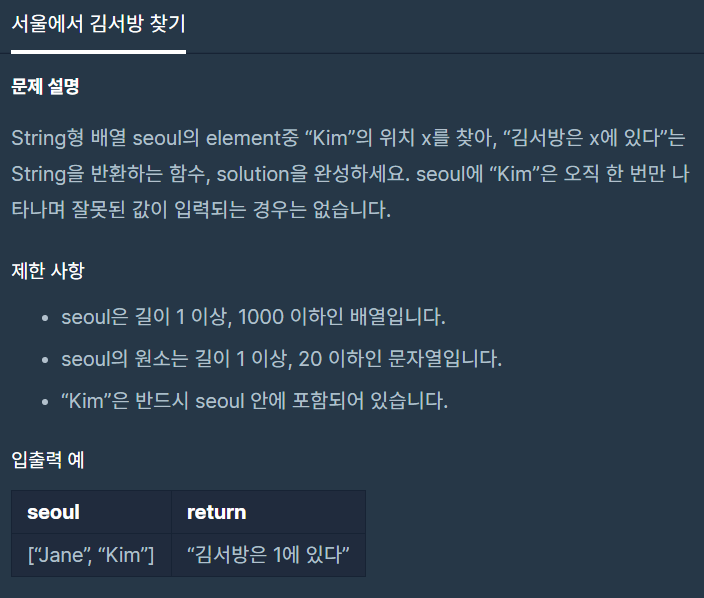

![[Level 1] 프로그래머스 서울에서 김서방 찾기 코틀린 풀이](/2020/03/05/find-kim-in-seoul/thumbnail.png)
[Level 1] 프로그래머스 서울에서 김서방 찾기 코틀린 풀이
프로그래머스 서울에서 김서방 찾기 코틀린 풀이
ë¬¸ì œ 소개
이번 ë¬¸ì œëŠ” 집나간 김서방을 찾아오는 ë¬¸ì œì…니다!

index ì„œì¹í•˜ë©´ 끝나네요
ë¬¸ì œí’€ì´
Linear Searching이고 ëê³ 많은 ì„œì¹ë²•ì´ 있지만 킹갓코틀린에는 .indexOf라는 내장함수가 있습니다!
쉽게 끝!
ì •ë‹µ 코드
1 | class Solution { |
쉬운 ë¬¸ì œë„¤ìš”! ì§ì ‘ for문 돌면서 구현해도 재밌을것 같아요!
출처: 프로그래머스 코딩 테스트 연습, https://programmers.co.kr/learn/challenges